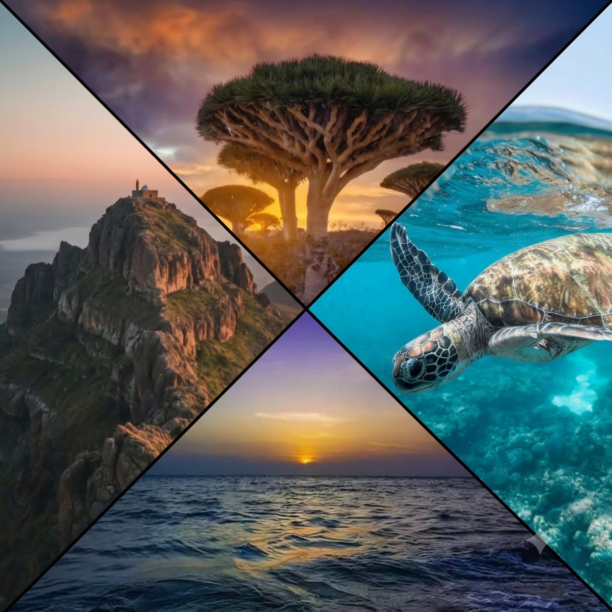
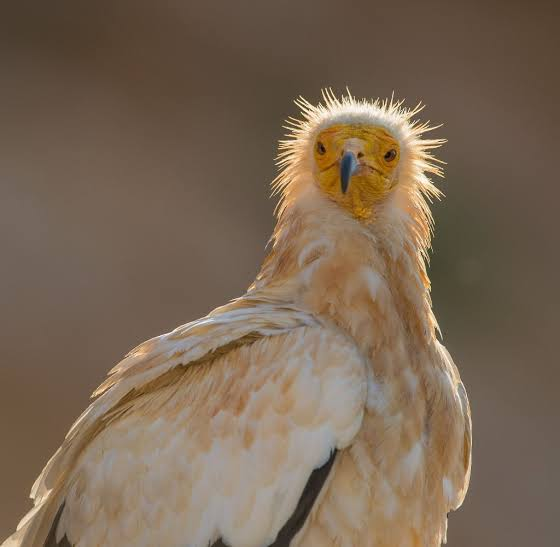
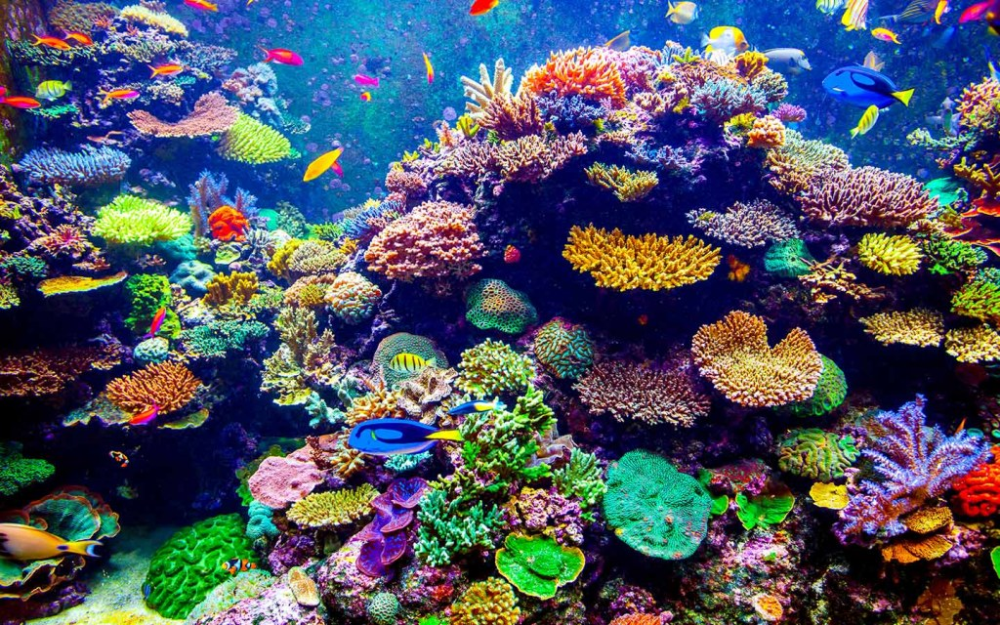
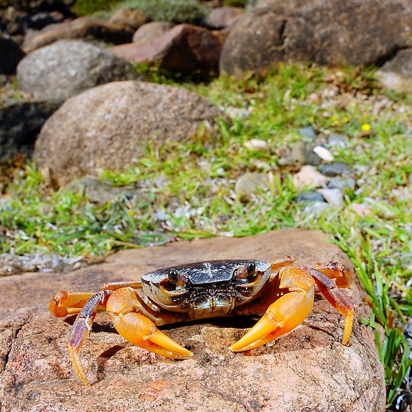
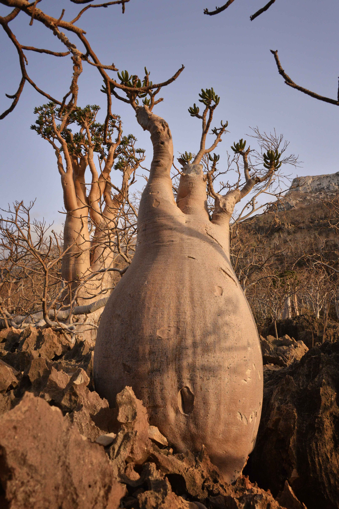
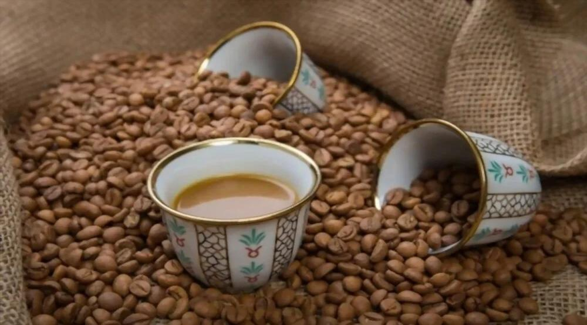
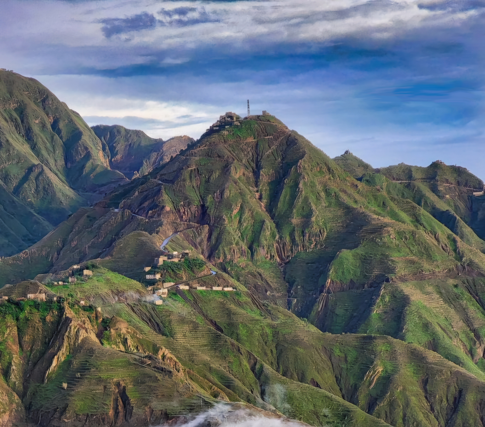
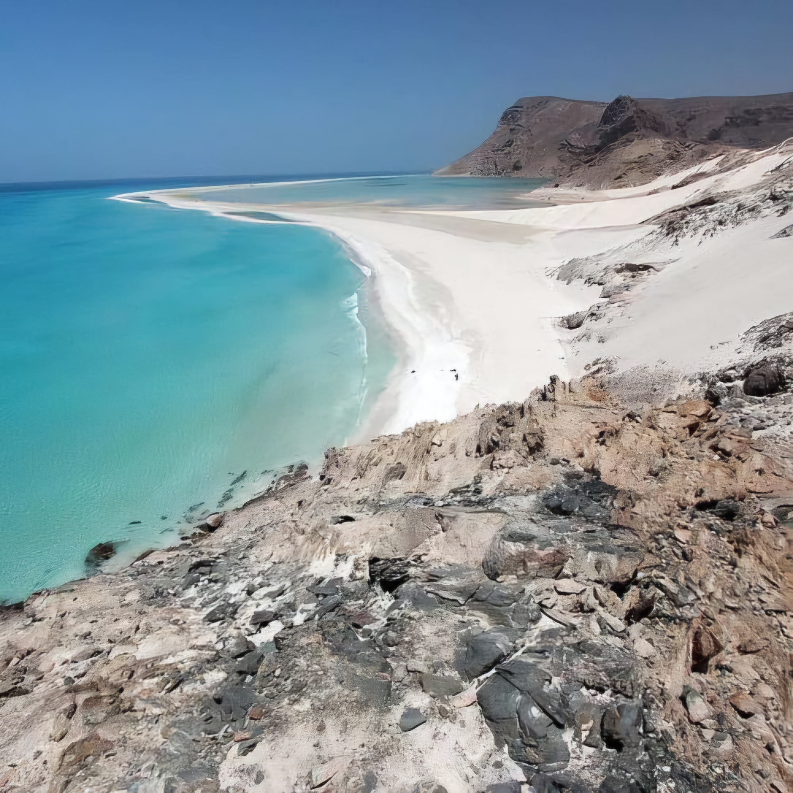
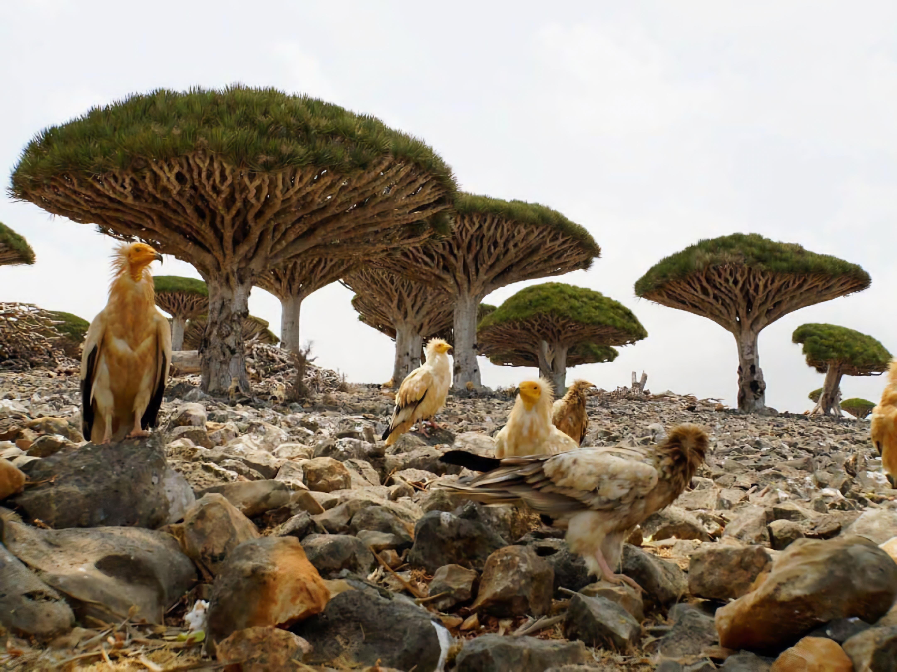
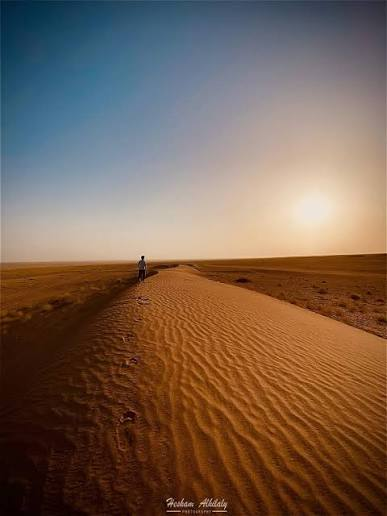

جمال الطبيعة اليمنية
تتميز اليمن بتنوع طبيعي وجغرافي كبير، حيث تجمع بين الجبال والسهول والصحاري والسواحل والجزر، مما يجعل طبيعتها غنية ومتنوعة من منطقة إلى أخرى.
من المرتفعات الجبلية الخضراء إلى السواحل الممتدة على البحر الأحمر وبحر العرب، تقدم اليمن مشاهد طبيعية مختلفة تعكس ثراء البيئة اليمنية.
وتعد جزيرة سقطرى من أبرز الأمثلة على هذا التنوع، بما تمتلكه من نباتات وكائنات طبيعية مميزة.
استكشف مناطق الطبيعة
اكتشف المزيد عن طبيعة اليمن

طائر الرخمه المصري

شجرة دم الاخوين

المرجان

سرطان سقطرى العذب

شجرة الخيار السقطرية

البن اليمني
هل تعلم؟
- سقطرى وعزلتها الجينية: أكثر من 37% من نباتات أرخبيل سقطرى و90% من زواحفها كائنات مستوطنة لا توجد في أي مكان آخر على كوكب الأرض.
- مرجان البحر الأحمر الصامد: تُعد الشعاب المرجانية في السواحل والجزر اليمنية بالبحر الأحمر الأكثر تحملاً لارتفاع الحرارة والملوحة عالمياً، وتُصنف كـ ملاذ أخيرة لتطعيم المرجان العالمي ضد الاحتباس الحراري.
- الملاذ الأول عالمياً لـ "سوعيدُه": تمتلك سقطرى أعلى كثافة تجمع وتكاثر على مستوى الكرة الأرضية لطائر الرخمة المصرية المهدد بالانقراض عالمياً.
- الهندسة الهيدروليكية لشجرة دم الأخوين: الشكل المظلي المقلوب للشجرة ليس عشوائياً، بل تصميم طبيعي محكم لالتقاط قطرات الضباب وتكثيفها لتنساب مباشرة نحو الجذور وتظليل التربة لمنع التبخر.
الجبال

تتميز جبال اليمن بتضاريسها المهيبة وجمالها الطبيعي الخلاب الذي يأسُر الألباب، حيث تقف كشاهد تاريخي يحكي أصالة هذا البلد وعراقته. وتضم هذه السلاسل الجبلية الشاهقة أعلى القمم في الجزيرة العربية، وعلى رأسها "جبل النبي شعيب". ولا تقتصر روعة جبال اليمن على ارتفاعها الشاهق وقممها التي تُعانق السحاب، بل تتجلى أيضاً في مدرجاتها الزراعية الخضراء وقراها المعلقة التي بُنيت بإتقان هندسي فريد على حواف الصخور منذ مئات السنين. تُشكل هذه الجبال مزيجاً ساحراً بين قسوة الطبيعة وإبداع الإنسان الذي طوّع الصخر، لتغدو لوحة فنية فريدة ومقصداً مُلهماً لعشاق المغامرة والتاريخ.
البحر والسواحل

تتمتع اليمن بشريط ساحلي ممتد وفريد يطل على البحر الأحمر وبحر العرب، مما يمنحها موقعاً جغرافيّاً استراتيجياً وطبيعة ساحلية تأسر الألباب. تتنوع السواحل اليمنية بين الشواطئ الرملية الذهبية والمياه الفيروزية الصافية، وتزخر بتنوع حيوي شاسع وشعاب مرجانية غنية تجعلها بيئة مثالية للحياة البحرية وعشاق الاستكشاف. ابتداءً من مضيق باب المندب التاريخي، مروراً بالمدن الساحلية العريقة كعدن والمكلا والحديدة، وصولاً إلى الشواطئ العذراء في أرخبيل سقطرى الأسطوري، تُشكل السواحل اليمنية لوحة طبيعية تجمع بين الجمال الفطري والأهمية الحضارية عبر العصور.
الجزر

الجزر اليمنية تنتشر في المياه الإقليمية لليمن، ولها تضاريسها ومناخها وبيئتها الخاصة وأكثر هذه الجزر تقع في البحر الأحمر من أهمها: جزيرة كمران وهي أكبر جزيرة مأهولة في البحر الأحمر، وجزر أرخبيل حنيش وجزيرة ميون وهي ذات موقع استراتيجي في مضيق باب المندب البوابة الجنوبية للبحر الأحمر ومن أهم الجزر في البحر العربي أرخبيل سقطرى وتعتبر جزيرة سقطرى أكبر جزر هذا الأرخبيل والذي يشمل إضافة إلى جزيرة سقطرى جزر سمحة ودرسة وعبد الكوري وتتميز جزيرة سقطرى بكثرة تنوعها الحيوي حيث تقدر نباتات سقطرى على اليابسة بحوالي 680 نوعاً
الصحراء

الرُّبع الخالي أكبر صحراء رملية (متّصلة) في العالم، وهي جزء من الصحراء العربية رابع أكبر صحراء في العالم. وتحتل الثلث الجنوبي الشرقي من شبه الجزيرة العربية، ويتجزء الربع الخالي حالياً بين أربع دول هي السعودية واليمن وعُمان والإمارات، ويقع الجزء الأعظم منه داخل الأراضي السعودية. تبلغ مساحتها 430,000 كيلو متر مربع، وتمثل 67,7% من مجمل التجمعات الرملية في المملكة، فتمتد ألف كيلو متر طولاً وخمس مائة كيلو متر عرضاً. وترتفع فيها كثبان رملية ثلاث مائة متر وتتحرك باستمرار جاعلة الربع الخالي منعدم المعالم الثابتة.